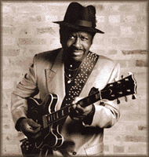
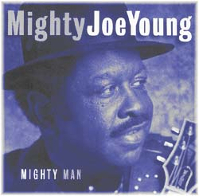

September 23, 1927, Shreveport, LA - March 24, 1999, Chicago, Il)
Американский певец, гитарист, представитель чикагского стиля.
Майти Джо Янг на протяжении десятилетий был самым стабильным чикагским блюзмэном. Например, 12 лет кряду он играл в новогоднюю ночь в чикагском клубе "Wise Fools" ("Мудрые дурни"). Он не приобрел известности Хаулин Вулфа или Отиса Раша, но был важной фигурой в истории становления и прогресса чикагского блюза в кон6це 50-х и в 60-х годах. Его надежная ритм-гитара звучит в ряде альбомов, сыгравших роль узловых точек в истории блюза: и в классических записях Джимми Роджерса и в новаторских альбомах Мэджика Сэма.
Родился в Луизиане, музыкальную карьеру начал в Милуоки в начале 50-х, затем короткое время выступал в Лос-Анжелесе, вернулся в Луизиану, где в 1955г. записал дебютную пластиночку для местной фирмы. В Чикаго, музыка которого стала его судьбой, Джо Янг приехал в пору расцвета чикагского блюза и вскоре уже работал с лучшими в городе. Прозвище "Mighty" (Могучий) получил за крепкое телосложение, в юности он пробовал силы на любительском ринге ("О таком домой писать не стоило. Я решил, лучше заниматься музыкой".). В 50-х аккомпанировал на концертах и в студии Хаулин Вулфу (Howlin' Wolf), Билли Бою Арнольду (Billy Boy Arnold), Джимми Роджерсу (Jimmy Rogers), Алберту Кингу (Albert King). Когда в 60-х расцвело следующее поколение молодых реформаторов чикагского блюза, он был с ними: Мэджик Сэм (Magic Sam), Джимми Докинс (Jimmy Dawkins), Фентон Робинсон (Fenton Robinson). Тогда же начал выступать под собственным именем со своей группой "Блюз, озаренный душой (соул)" (Blues with a Touch of Soul), название которой отражало стремление Майти Джо Янга смешивать суровый блюзовый ритм с яркой манерой вокала в стиле "соул". Во многих энциклопедиях указывается, что Майти Джо Янг был "первым блюзмэном, прорвавшимся в северные районы Чикаго", то есть, регулярно выступавшим в клубах с белой аудиторией. В 69-м его выступление с певицей Коко Тейлор (Koko Taylor) было главной сенсацией Первого чикагского фестиваля "Grant Park". Коко Тейлор вскоре была признана "Королевой блюза", и перед Майти Джо Янгом открывалась перспектива занять в новом блюзе место, которое оставалось свободным после ранней смерти Мэджика Сэма, то есть, играть новый блюз, пользующийся и признанием критиков и хорошим коммерческим успехом. Это подтвердило и успешное выступление на знаменитом блюз-фестивале в Энн Арбор (Ann Arbor Blues festival). Но к середине 70-х о былом расцвете блюза все забыли, а Могучий Джо Янг продолжал регулярную клубную работу в Чикаго и просветительские гастроли по залам университетских городков США. Он так же продолжал оказывать весомую музыкальную помощь Коко Тейлор.
К 1986м году Майти Джо Янг был готов осуществить давнюю мечту: записать альбом, над которым не висела бы тень продюссора, заказывающего музыку. Он снял студию на собственные средства и приступил к работе. Но после трех песен нехватка денег заставила вновь отправиться на гастроли. Затем обнаружилось ущемление шейного нерва. Потребовалась операция. Осложнения после операции привели к полной потери чувствительности тела. На протяжении следующего года Янг лечился в клиниках и больницах, и заново учился держать равновесие при ходьбе. Но что пугало его больше - это отсутствие чувствительности в пальцах. Для гитариста по жизни и в душе - это было хуже смерти. Через несколько лет он вернулся на сцену как вокалист. Аккомпанировал ему гитарист Уилл Кросби (Will Crosby), сын его давнего друга, саксофониста Джейка Кросби. Затем в группе появился уже его собственный сын: Джо Янг-младший. К задвинутому на полку проекту Джо Янг-старший вернулся ровно десять лет спустя. Альбом "Mighty Man" ("Могучий человек"), в котором Янг поет и в двух песнях играет соло-гитару, опубликован фирмой "Blind Pig" в 1997 году. Эта - памятник верности себе и верности блюзу. Майти Джо Янг не мог уйти, не закончив ее.

"Это отличается от традиционного блюза, но это - блюз, - говорил Янг в интервью к выходу альбома.- Мне нравятся красивые аранжировки, а не традиционный саунд, который всегда одинаков. Я хотел другое звучание…"Не смотря на суровый ритм, альбом полон светлой
энергетики и оптимистичных песен. Жизнелюбие,
сохраненное в житейский испытаниях, утверждает и
дарит Майти Джо Янг этим своим последним
альбомом, на момент выпуска которого ему
исполнилось 70 лет.
 Why You Want To Hurt Me? - Образец правильной клубной работы.
Why You Want To Hurt Me? - Образец правильной клубной работы.
Страница Майти Джо Янга на "Блайнд Пиг" с двумя вавами